Từ khối gỗ vuông vức năm 1964 đến giao diện sinh học cảm ứng của tương lai - hành trình thiết kế của thiết bị trỏ quen thuộc nhất trên bàn làm việc.
Dùng phím ←→, lướt, hoặc chấm điều hướng bên dưới
Phần I · Lịch sử thiết kế
Lịch sử ra đời
Chuột máy tính được phát minh bởi Tiến sĩ Douglas C. Engelbart cùng kỹ sư trưởng Bill English tại Viện Nghiên cứu Stanford (SRI), khi máy tính vẫn còn là những cỗ máy khổng lồ chỉ giao tiếp qua thẻ đục lỗ.
Ý tưởng hình thành khi Engelbart tham dự một hội thảo đồ họa máy tính, ông nghĩ đến việc di chuyển con trỏ trên màn hình một cách đơn giản. Hợp đồng với NASA về chọn mục trên màn hình là một động lực lớn.
Nguyên mẫu đầu tiên ra đời tại Trung tâm Nghiên cứu Tăng cường (ARC), SRI, Menlo Park, California - nơi Engelbart giữ vai trò giám đốc.
Bằng sáng chế "X-Y Position Indicator for a Display System" được nộp.
Ra mắt công chúng tại Fall Joint Computer Conference, San Francisco - buổi thuyết trình 90 phút sau này được gọi là "The Mother of All Demos".
Bằng sáng chế được cấp cho Engelbart năm 1970; bản quyền sau đó được bán lại cho hãng Xerox vào năm 1981.
Nơi phát minhStanford Research InstituteMenlo Park, California, Mỹ
Phần I · Lịch sử thiết kế
Bốn thời kỳ thiết kế
Chọn một giai đoạn để xem hình dáng, bộ phận chỉ báo và phản hồi của người dùng thay đổi ra sao qua thời gian.
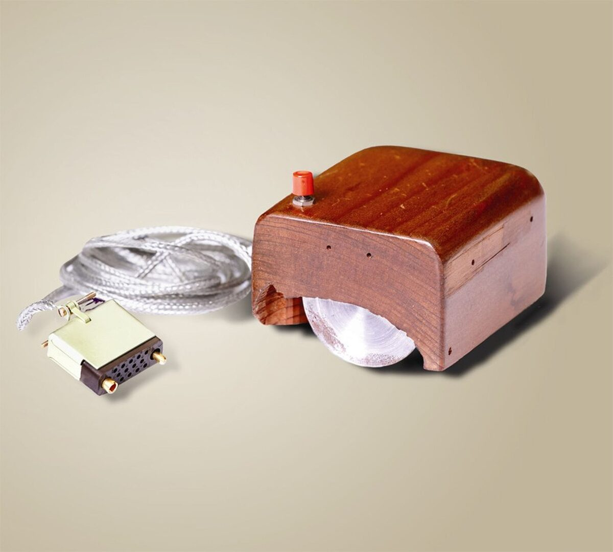
Khối gỗ khởi thủy
Ngoại hình: khối gỗ vuông vức, to và cồng kềnh, chỉ một nút bấm nhỏ màu đỏ, giữ nguyên màu vân gỗ.
Chỉ báo: hai bánh xe kim loại đặt vuông góc với nhau ở mặt dưới.
Phản hồi: người dùng kinh ngạc vì tính đột phá, nhưng khối gỗ cồng kềnh khiến việc cầm nắm không thoải mái; hai bánh xe chỉ hoạt động tốt khi di chuyển theo đường thẳng.
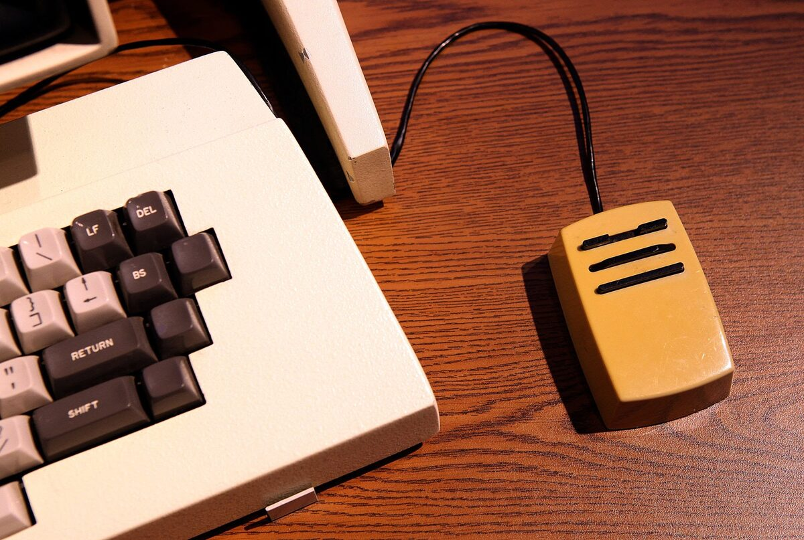
Kỷ nguyên bi lăn
Ngoại hình: chuyển sang chất liệu nhựa, thu gọn vừa lòng bàn tay, số nút tăng từ 1 lên 3, tông trắng ngà và be.
Chỉ báo: bánh xe được thay bằng một viên bi cao su truyền tín hiệu qua các trục cơ học.
Phản hồi: ban đầu rất thích thú vì di chuyển tự do mọi hướng, nhưng viên bi cao su dần ma sát kém, bám bụi, kẹt rít khiến con trỏ nhảy lung tung - buộc người dùng phải tháo ra lau chùi thường xuyên.
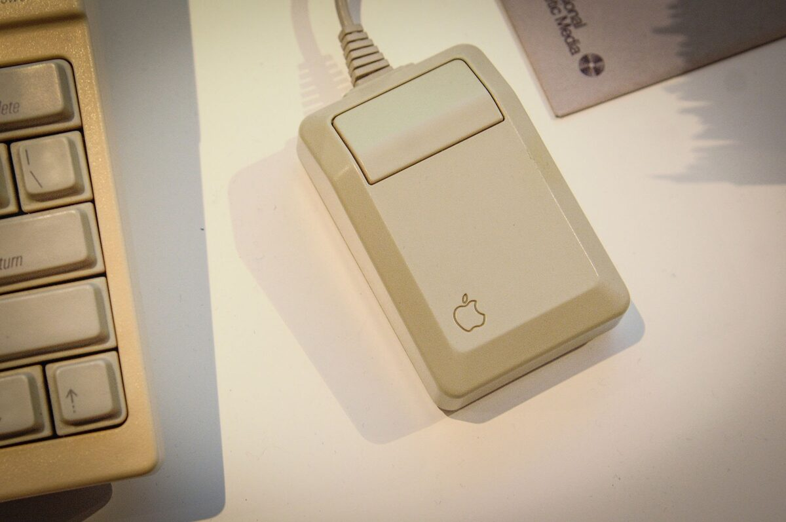
Quang học & Laser lên ngôi
Ngoại hình: thân thon gọn hơn, bổ sung con lăn chuột, màu sắc đa dạng từ đen, bạc đến trắng.
Chỉ báo: đèn LED quang học hoặc tia laser kết hợp cảm biến quét bề mặt di chuyển.
Phản hồi: cực kỳ tích cực - dân thiết kế đồ họa và game thủ ca ngợi độ mượt, độ nhạy cao, hết hẳn phiền toái kẹt bụi; chuột laser còn dùng được trên cả mặt kính.
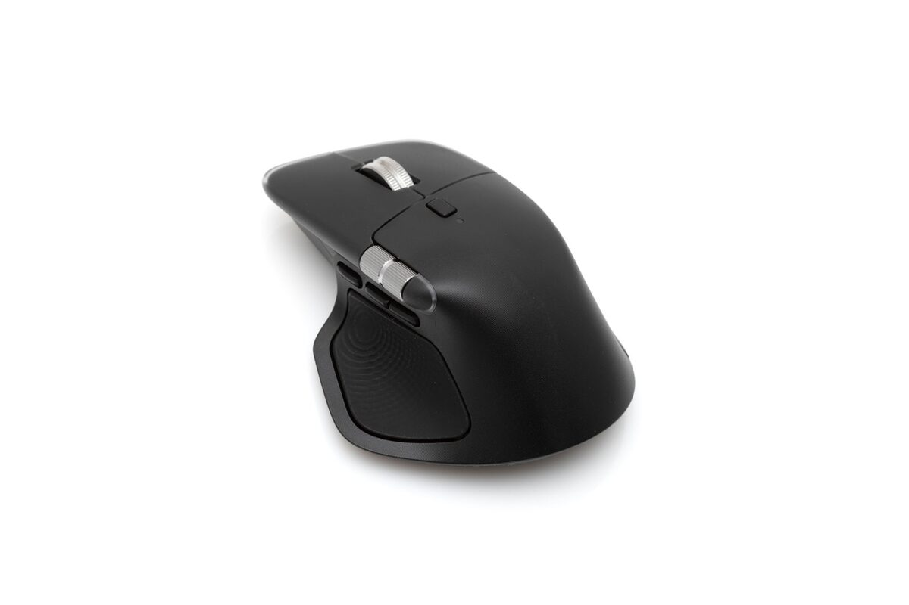
Công thái học & Không dây
Ngoại hình: thiết kế công thái học lượn sóng ôm lòng bàn tay hoặc dạng đứng, đa dạng kích thước, cắt dây để dùng Bluetooth.
Chỉ báo: cảm biến quang học độ phân giải DPI cực lớn, theo dõi chính xác đến từng pixel; một số tích hợp mặt cảm ứng.
Phản hồi: được đánh giá là giải pháp hoàn hảo cho sức khỏe cổ tay khi làm việc nhiều giờ; game thủ hài lòng với tốc độ phản hồi gần như không độ trễ.
Phần II · Phân loại
Ba cách phân loại chuột
Chuột máy tính hiện nay được phân loại dựa trên ba tiêu chí chính.
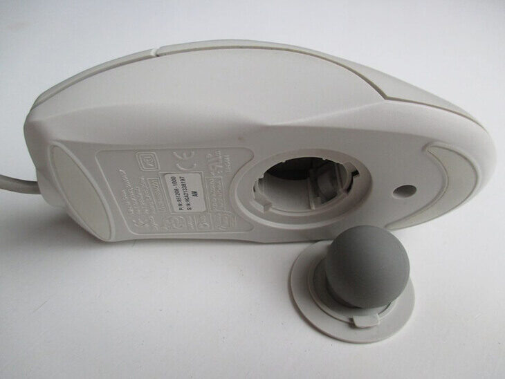
Chuột bi
Dùng viên bi cao su ở mặt dưới để lăn và điều khiển con trỏ. Đã lỗi thời do dễ bám bụi và độ chính xác kém.
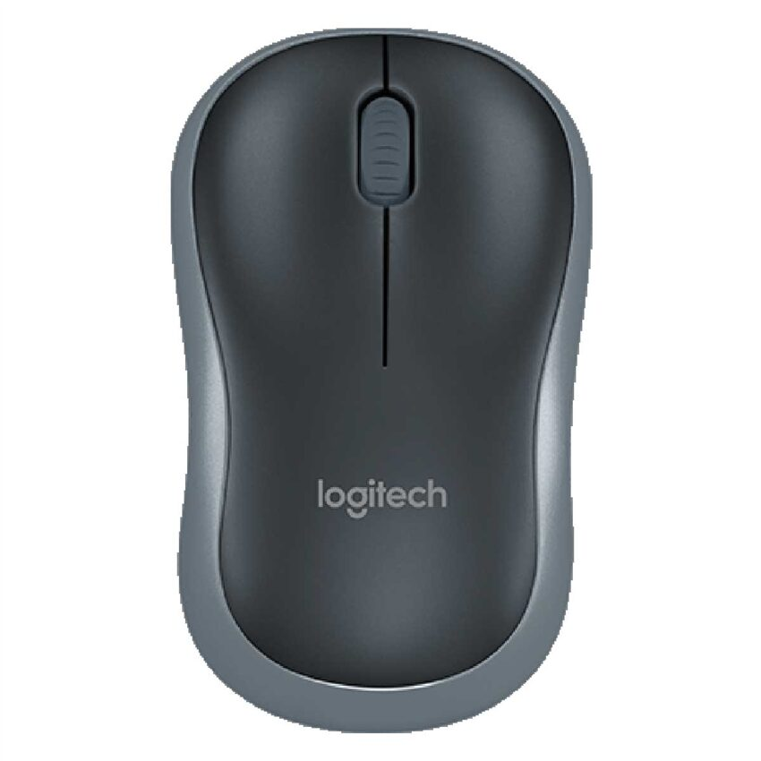
Chuột quang
Dùng đèn LED và camera siêu nhỏ để chụp, phân tích bề mặt di chuyển. Độ bền cao, phổ biến nhất hiện nay.
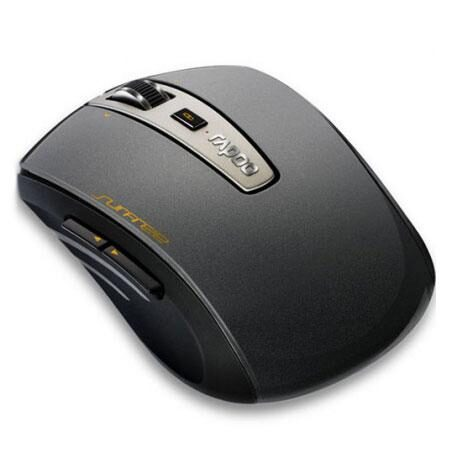
Chuột laser
Dùng tia laser thay cho đèn LED. Độ nhạy (DPI) rất cao, mượt mà trên nhiều bề mặt phức tạp, kể cả mặt kính.
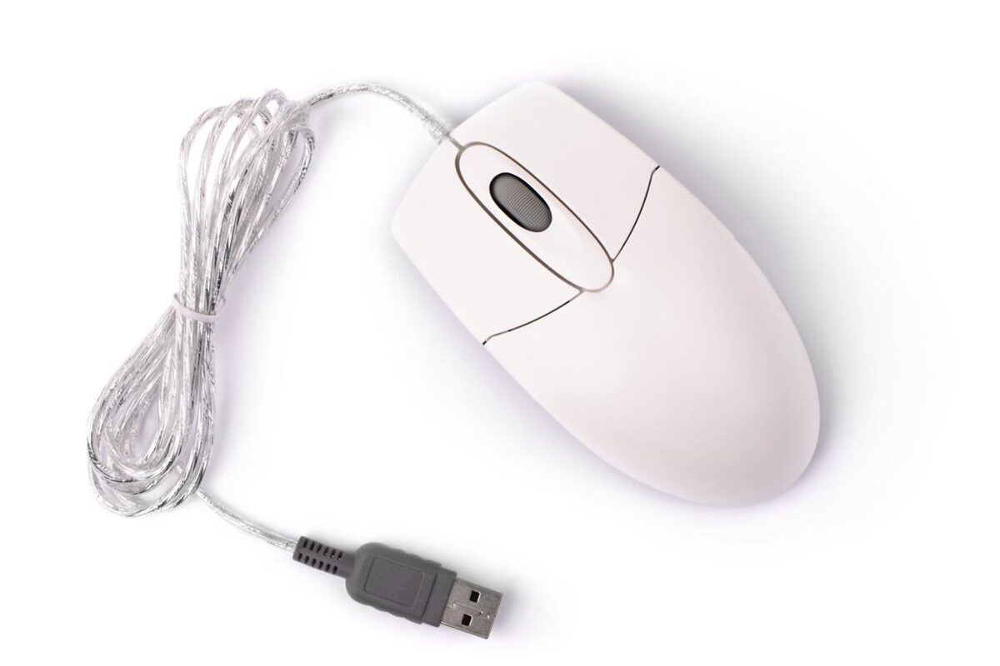
Có dây
Kết nối qua cổng USB. Tín hiệu ổn định, không độ trễ và không cần sạc pin.
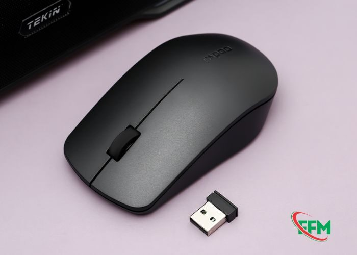
Không dây · USB Receiver
Kết nối qua sóng RF 2.4GHz thông qua đầu thu USB nhỏ. Kết nối nhanh, độ trễ thấp, ổn định cao.
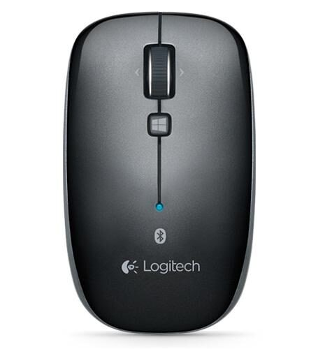
Không dây · Bluetooth
Kết nối trực tiếp với chip Bluetooth tích hợp sẵn. Gọn gàng, không tốn cổng USB, dễ chuyển đổi thiết bị.
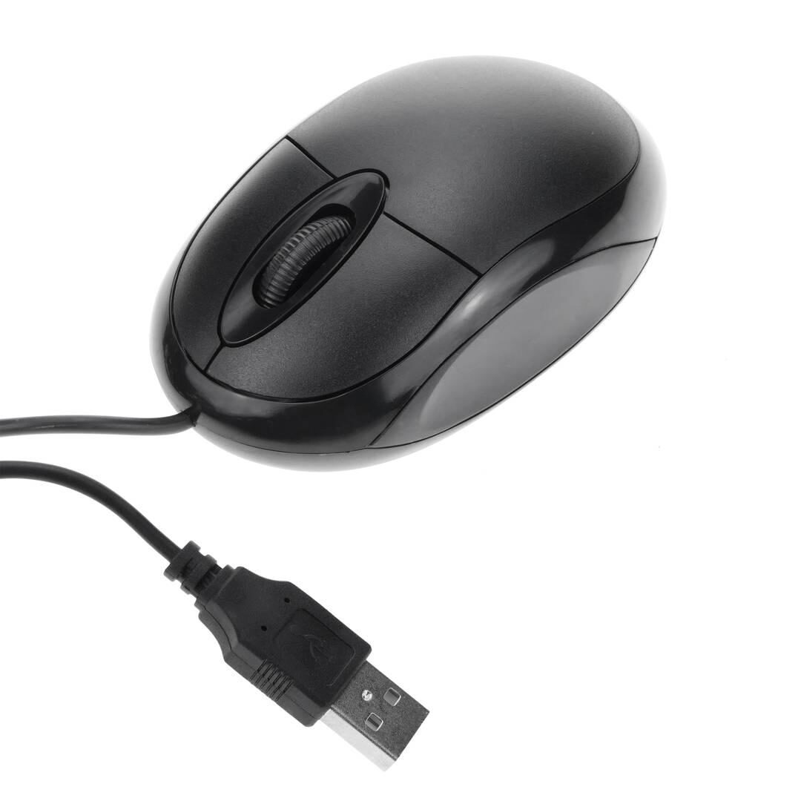
Văn phòng
Thiết kế tối giản, nhỏ gọn, nút cơ bản. Tập trung tiện lợi và giá thành rẻ.
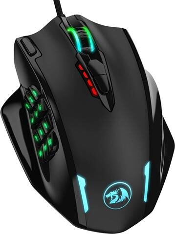
Gaming
Độ nhạy cao, nhiều nút phụ lập trình được, switch bền, thường tích hợp LED RGB.
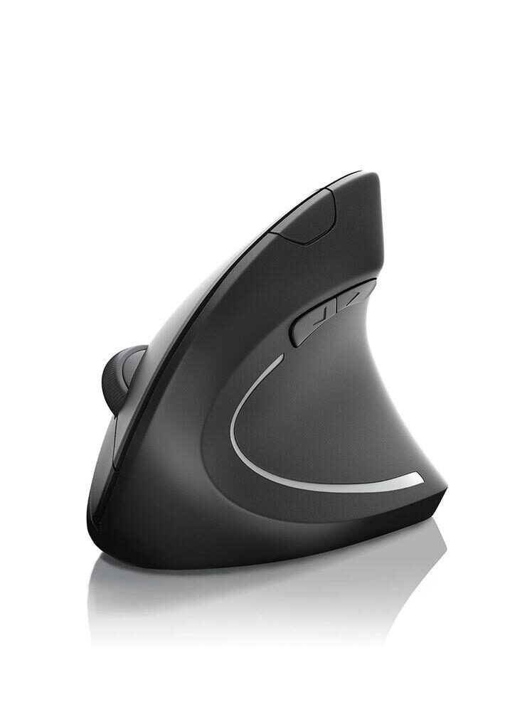
Công thái học
Thiết kế theo cấu tạo bàn tay (đứng hoặc nghiêng), giảm mỏi và bảo vệ cổ tay.
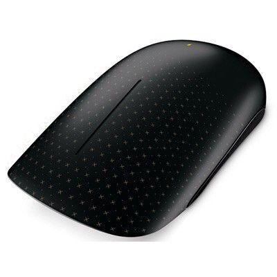
Cảm ứng
Bề mặt phẳng, không nút bấm vật lý, điều khiển bằng thao tác vuốt, chạm đa điểm.
Phần II · Phân loại
Ba loại chuột được sử dụng phổ biến
So sánh bộ phận chỉ báo, bộ phận điều khiển cùng ưu và nhược điểm thực tế của từng loại kết nối.
Bộ phận chỉ báo
Cảm biến quang học ở mặt dưới, phát hiện chuyển động trên bề mặt.
Chuyển động được đổi thành tín hiệu xác định vị trí, hướng và tốc độ con trỏ.
Một số dùng cảm biến LED quang học để nhận biết chuyển động.
Bộ phận điều khiển
Nút trái - chọn, mở, kéo và thả.
Nút phải - mở menu tùy chọn.
Con lăn - cuộn trang, có thể nhấn cho chức năng bổ sung.
Nút bên hông - quay lại / chuyển tiếp tùy thiết kế.
Dây USB - vừa cấp điện vừa truyền dữ liệu.
Ưu điểm
Kết nối ổn định, độ trễ thấp
Không cần pin hoặc sạc
Cắm là dùng được ngay
Giá thành thường thấp
Nhược điểm
Dây gây vướng víu
Phạm vi di chuyển bị giới hạn theo chiều dài dây
Khó mang theo, khó sắp xếp gọn gàng
Bộ phận chỉ báo
Cảm biến quang học ở mặt dưới, nhận biết chuyển động trên bề mặt.
Chuyển động được đổi thành tín hiệu điều khiển vị trí con trỏ.
Một số mẫu có đèn báo trạng thái kết nối hoặc pin.
Bộ phận điều khiển
Nút trái / phải - chọn, kéo thả / mở menu tùy chọn.
Con lăn - cuộn trang và chức năng bổ sung.
Nút bên hông - quay lại / chuyển tiếp.
Nút DPI - điều chỉnh độ nhạy con trỏ.
USB Receiver - nhận tín hiệu không dây; nút nguồn bật/tắt chuột.
Ưu điểm
Không dây nên dễ di chuyển
Kết nối tương đối ổn định
Phạm vi sử dụng rộng
Bàn làm việc gọn gàng hơn chuột có dây
Nhược điểm
Cần một cổng USB cho Receiver
Có thể làm mất đầu thu
Phải sạc hoặc thay pin
Bộ phận chỉ báo
Cảm biến quang học ở mặt dưới, phát hiện chuyển động trên bề mặt.
Chuyển đổi chuyển động thành tín hiệu điều khiển con trỏ.
Đèn LED báo trạng thái kết nối hoặc pin trên một số mẫu.
Bộ phận điều khiển
Nút trái / phải - chọn, kéo thả / mở menu tùy chọn.
Con lăn - cuộn nội dung lên xuống.
Nút DPI, nút Bluetooth/Pair - điều chỉnh độ nhạy, ghép nối.
Công tắc nguồn - bật / tắt chuột.
Ưu điểm
Không dây, không cần USB Receiver
Không chiếm cổng USB
Gọn gàng, dễ mang theo
Phù hợp laptop và thiết bị có Bluetooth
Nhược điểm
Thiết bị phải hỗ trợ Bluetooth
Cần ghép nối khi dùng lần đầu
Phải sạc hoặc thay pin
Đôi khi gặp vấn đề kết nối
Phần III · Trải nghiệm cá nhân
Chuột đang dùng: Rapoo MT760
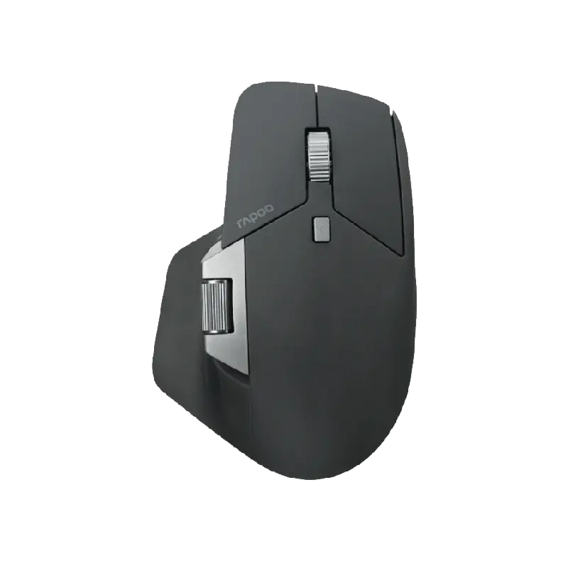
4000DPI tối đa
PAW3220Cảm biến quang học
101gTrọng lượng
3Kiểu kết nối
Chuột công thái học dành cho người thuận tay phải, hỗ trợ 3 phương thức kết nối và cảm biến quang học độ nhạy cao.
Nút trái / phải
Chọn, mở, kéo thả / mở menu tùy chọn
Con lăn dọc / ngang
Cuộn nội dung lên xuống / sang trái phải
Nút DPI
Điều chỉnh độ nhạy của con trỏ
Nút bên hông
Thực hiện thao tác chức năng phụ
Cổng USB-C
Sạc và kết nối có dây
Công tắc kết nối
Chuyển đổi giữa 2.4GHz / Bluetooth / USB-C
Ưu điểm
Thiết kế công thái học, có phần tựa ngón cái thoải mái
Đa phương thức kết nối, dùng được nhiều thiết bị
Con lăn ngang tiện lợi khi làm việc với bảng tính
Hệ thống click giảm tiếng ồn, hợp môi trường học tập / văn phòng
Nhược điểm
Kích thước và trọng lượng khá lớn với một số người, dễ mỏi tay khi dùng lâu
Nhiều nút chức năng nên cần thời gian làm quen
Một số nút phụ hơi khó tiếp cận, dễ bấm nhầm
Độ chính xác giảm trên một số bề mặt không phù hợp
Bản phác thảo concept - hình dáng giọt nước khuyết lòng, gân LED đổi màu linh hoạt
Phần IV · Xu hướng tương lai
"BioMorph Mesh"
Hình dáng lấy cảm hứng từ một giọt nước khuyết tinh tế ở lòng bàn tay, làm từ Polymer Sinh học Thông minh tự đổi mềm/cứng để ôm sát từng nấc xương ngón tay.
Cảm biến nhiệt kích hoạt chất liệu tự co giãn để vừa vặn 100% với kích thước và thói quen cầm chuột của riêng từng người.
Khi nâng khỏi mặt bàn khoảng 15cm, chuột chuyển sang chế độ con trỏ vi không gian, phục vụ môi trường thực tế ảo VR/AR với giao diện holographic.
Đo nhịp tim, nhiệt độ da và mức độ căng thẳng; bề mặt đổi màu - xanh lá là thư giãn, đỏ rực là stress cao - để nhắc người dùng nghỉ ngơi.
Tấm lót thông minh tự truyền năng lượng không dây trong phạm vi 30cm, giữ chuột luôn đầy pin dù đang rê trên bàn hay nâng lên thao tác.
Ưu điểm
Loại bỏ hoàn toàn hội chứng ống cổ tay
Linh hoạt giữa công việc 2D và thao tác 3D
Chăm sóc sức khỏe người dùng chủ động
Nhược điểm
Chi phí sản xuất cao
Cần thời gian làm quen thao tác điều khiển không gian
Tổng kết hành trình
Từ gỗ & bi lăn đến giao diện sinh học
1964 · Khối gỗ→1970s · Bi lăn→1990s · Quang & Laser→2000s · Công thái học→Tương lai · BioMorph Mesh
Cảm ơn thầy/cô và các bạn đã theo dõi bài trình bày về Chuột máy tính.
Bạn cho chúng mình xin feedback nhé?
Đã lỡ cho sao rồi thì làm giúp tụi mình cái khảo sát luôn nha 🥺